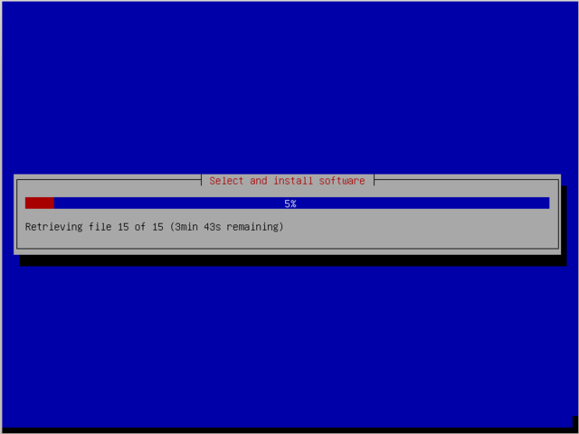

This last week has been a long one for me because I've been up late it seems almost every night for several days. Some nights it was for the phone configuration. Some nights is was for (failed) BIOS upgrades. Last night I just couldn't sleep. And tomorrow night I'll be up rewiring the main switching center, which may take most of the night.
Something else I've been seeing a lot of is the Debian install screen. It took me a while to figure out how to avoid redownloading all of the data for every install. Until then, I've been doing a lot of waiting.

But I did get lots of good work done. I made big steps in simplifying the phone configuration to something easy enough for someone new to look at it and know what's going on. My Debian installs are all good tests for an install of a maintenance computer to centralize network configuration. The half of the new switches are installed, and the others are going in tomorrow night. Phones are online to at least every building.
We also had a few visitors at the farm last week. Steve Mix, one of the permanent residents, hosted a basketball camp, and one of the Wallace family friends stayed on the farm while their daughter went to the basketball camp. It was nice having someone else on the farm, even if only for two days.
This week is looking pretty busy, too. The maintenance computer that I'm testing now should (hopefully) be ready to be put into production tomorrow, and tomorrow night is the big wiring night. Wednesday night I'll be upgrading our Hackintosh, which does most of the video editing around here. And Friday I'll be about ready to put in a new gateway with a from-scratch configuration. (You know that box between you and the internet? Our gateway is one of those, but bigger.) So, I'm both looking forward to this coming week and dreading the next wave of late nights.
In addition to prayers for my own strength and perseverance through the week, my dad also needs some serious prayers this week. He's been working on a project at work for over a month that has just been exhausting him. It was supposed to be done this week, but now it's looking like there's still a week or two more to go. He can use all of the peace that God can give him.